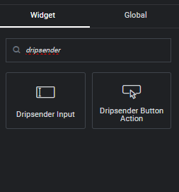
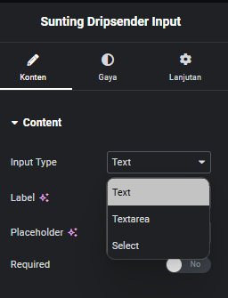
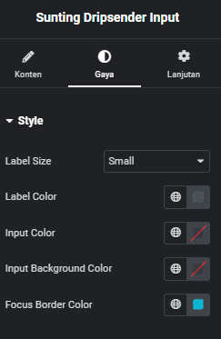
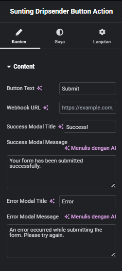
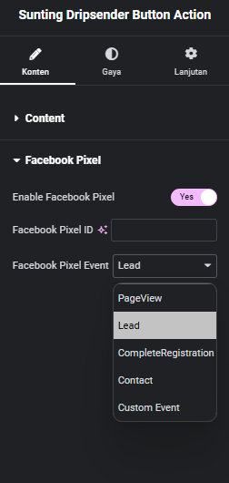
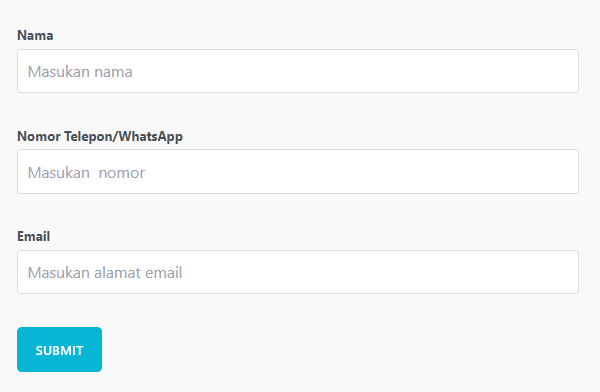

Dokumentasi Dripsender Elementor Plugin
Pengenalan
Dripsender Elementor Plugin adalah ekstensi kustom untuk Elementor yang memungkinkan Anda membuat formulir interaktif dengan mudah dan mengirimkan data ke Dripsender melalui webhook. Plugin ini terdiri dari dua widget utama: Dripsender Input dan Dripsender Button Action.
Instalasi
- Unduh file zip plugin Dripsender Elementor.
- Di dashboard WordPress Anda, navigasikan ke Plugins > Add New > Upload Plugin.
- Pilih file zip yang telah Anda unduh dan klik "Install Now".
- Setelah instalasi selesai, klik "Activate Plugin".
Penggunaan
Menambahkan Widget
Untuk menambahkan widget Dripsender ke halaman Anda:
- Edit halaman dengan Elementor.
- Cari "dripsender" di panel widget.
- Anda akan melihat dua widget: Dripsender Input dan Dripsender Button Action.
- Drag and drop widget yang diinginkan ke area edit Anda.

Mengkonfigurasi Dripsender Input
Setelah menambahkan widget Dripsender Input:
- Klik widget untuk membuka panel pengaturan.
- Di tab Content, Anda dapat mengatur:
- Input Type (Text, Textarea, atau Select)
- Label
- Placeholder
- Required (Ya/Tidak)
- Di tab Style, Anda dapat menyesuaikan:
- Label Size
- Label Color
- Input Color
- Input Background Color
- Focus Border Color


Mengkonfigurasi Dripsender Button Action
Untuk widget Dripsender Button Action:
- Klik widget untuk membuka panel pengaturan.
- Di tab Content, atur:
- Button Text
- Webhook URL (URL Dripsender Anda)
- Success Modal Title dan Message
- Error Modal Title dan Message
- Di tab Style, sesuaikan:
- Button Alignment
- Text Color
- Background Color
- Jika ingin menggunakan Facebook Pixel, aktifkan di tab Facebook Pixel dan isi detailnya.


Contoh Penggunaan
Berikut adalah contoh penggunaan Dripsender Elementor Plugin dengan fokus pada input nama dan nomor telepon:
Penting:
- Input pertama akan selalu dianggap sebagai "Nama".
- Input kedua akan selalu dianggap sebagai "Nomor Telepon" atau "WhatsApp".
- Jika label input tidak sesuai dengan ketentuan di atas, sistem akan tetap memperlakukan input pertama sebagai nama dan input kedua sebagai nomor telepon.
- Input ketiga dan seterusnya dapat digunakan untuk informasi tambahan sesuai kebutuhan Anda.
- Tambahkan widget Dripsender Input pertama:
- Atur input type sebagai "Text"
- Set label sebagai "Nama"
- Aktifkan opsi "Required"
- Tambahkan widget Dripsender Input kedua:
- Atur input type sebagai "Text"
- Set label sebagai "Nomor Telepon/WhatsApp"
- Aktifkan opsi "Required"
- Tambahkan widget Dripsender Input ketiga (opsional):
- Atur input type sesuai kebutuhan (misalnya "Text" untuk email)
- Set label sesuai kebutuhan (misalnya "Email")
- Tambahkan widget Dripsender Button Action:
- Atur teks tombol menjadi "Submit"
- Masukkan Webhook URL Dripsender Anda
- Sesuaikan pesan sukses dan error sesuai kebutuhan
- Sesuaikan gaya masing-masing widget sesuai kebutuhan.
- Publish atau update halaman Anda.

Perilaku Sistem
Sistem Dripsender Elementor Plugin memiliki perilaku khusus terkait dengan dua input pertama:
- Input pertama akan selalu dikirim sebagai parameter "name" ke webhook, terlepas dari label yang Anda berikan.
- Input kedua akan selalu dikirim sebagai parameter "phone" ke webhook, terlepas dari label yang Anda berikan.
- Input ketiga dan seterusnya akan dikirim dengan nama parameter sesuai dengan label yang Anda berikan (dalam format lowercase dan underscore untuk spasi : "alamat_email" untuk "Alamat Email").
Troubleshooting
Jika Anda mengalami masalah dengan plugin:
- Pastikan Elementor terinstal dan diaktifkan.
- Verifikasi bahwa Webhook URL yang Anda gunakan valid dan aktif.
- Periksa console browser untuk error JavaScript.
- Pastikan semua field yang diperlukan telah diisi sebelum mengirimkan form.
- Jika data tidak terkirim dengan benar, periksa urutan input Anda dan pastikan dua input pertama adalah untuk nama dan nomor telepon.
Dukungan
Untuk dukungan lebih lanjut atau pertanyaan, silakan hubungi kami di [masukkan informasi kontak Anda di sini].